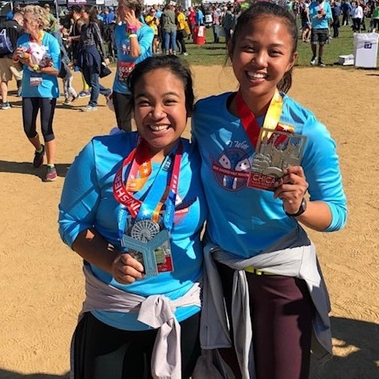
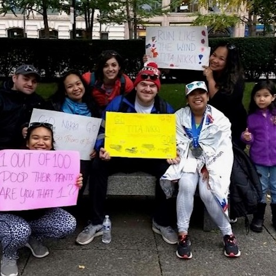
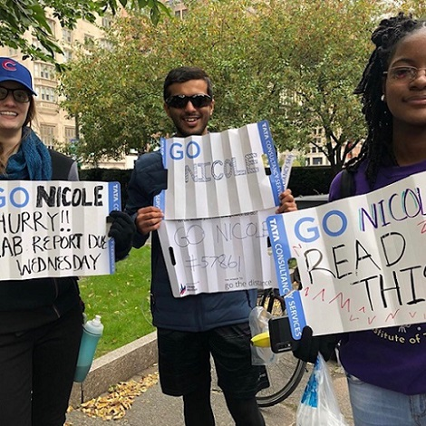
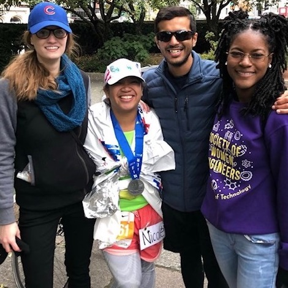
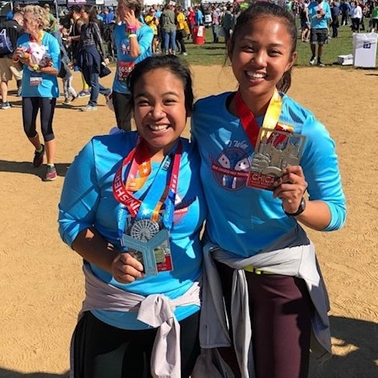
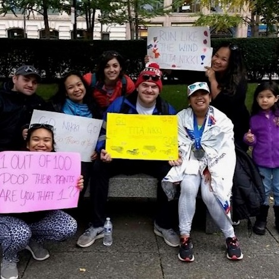
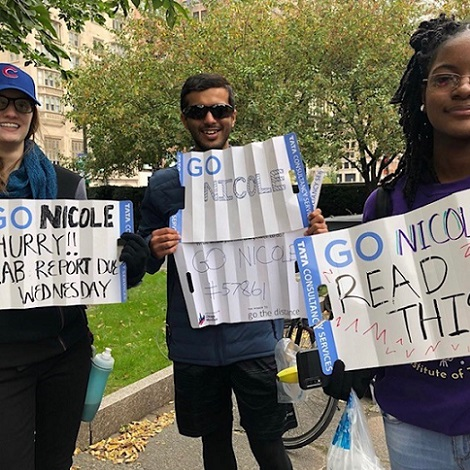
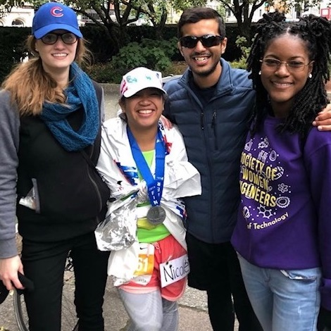
I started to run in 6th grade. I ran cross country because I wanted to be athlete. Two weeks in and it was complete and utter torture. I started fantasizing about tying up my coach to a pole so that we wouldn’t have to run 3 miles every practice. Then one day to add to the nightmare… I fell in goose poop. We were doing hill-training and he really wanted us to utilize gravity and lean into our run on the way down. After that, I stopped running cross-country. Later, I continued to run in track and field where I could bare the practice, but my heart wasn’t really in it at this age.
In high school, I picked up running again because of stress. It was way to get away from school and de-stress. I would run with friends in any kind of weather. I didn't plan on liking it since I was so scarred at a younger age. I ran leisurely, when I wanted to, and I really started to enjoy it. It became my go to thing to do when I was sad, happy, or just wanted to enjoy the weather outside.
In college, I started signing up for fun races like The Color Run, other 5k's, and The Hot Chocolate 15k. I was having so much fun doing these races with my friends and challenging myself by running faster and longer. I even started to train to get better. At this point in my running journey, I really wanted to get better and I was excited to cross the starting line of every race.
After running fun races like the Hot Chocolate 15k, I decided to run a half marathon. I wanted to make a goal for myself and really push myself farther. It was a scary process and I was always worried about getting injured or not finishing. I trained with my best friend, Riya, and she kept pushing to do better. In the end, I finished in 2 hours and 19 minutes. It was the fastest I had ever run and I felt great. I was so happy to finish without injuries and do better than I thought I would.
My dream goal was to run a marathon. A whole 26.2 miles. My thoughts were, "I'm already half-way there." Saying that was MUCH easier said than done. Compared to the half marathon training, marathon training was intense. I did the training mostly alone and was really drained most of the time. My mileage per week ranged from 20-30 miles for 18 weeks and it was draining. If I didn't reach the mileage I needed, I'd get really down on myself. To get out of this rut, I'd have to keep reminding myself that at the end of the day I was going to be crossing the starting line of the Chicago Marathon. Even though it was a rough ride, I still pulled through. During the race, I was exhilarated by the supportive crowd and my family and friends who came and really pushed me to cross the finish line.
Ever since I finished the marathon, I've surprisingly wanted to run another one! Accomplishing my biggest goal has only had me wanting to reach even further and see how far I can push myself. I am currently part of a training program called Nike Project Fearless, where I plan to run the Bank of America Chicago Half Marathon in June. The plan is to push for a PR and go sub 2:19 for my time. I'll be training 4-5 times a week and I'm excited to take on this next challenge.
Thanks to support from all of my family and friends, I've been able to do great on my runs and continue to challenge myself to go further. I'm grateful that I have them in my life.
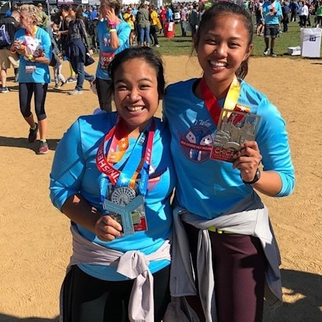
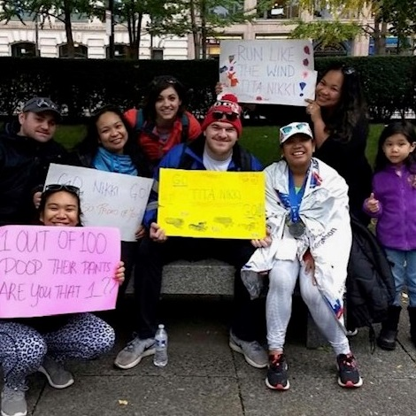
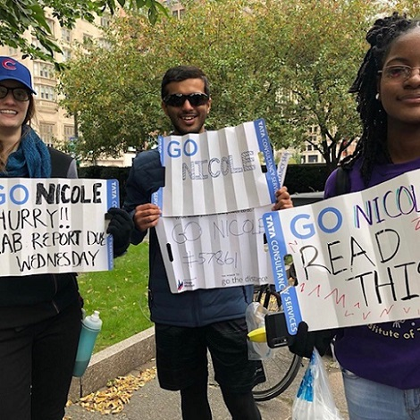
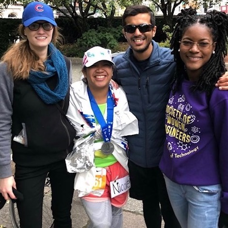